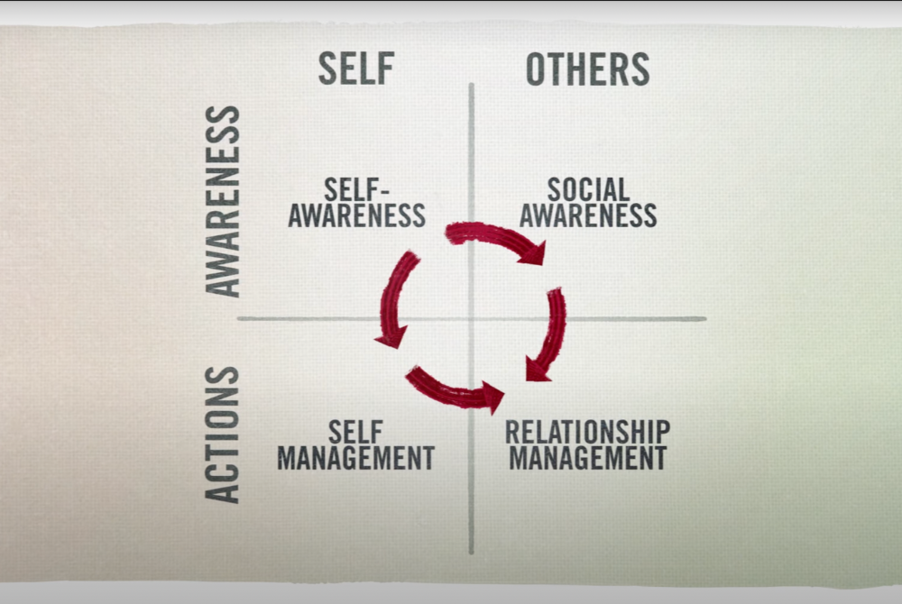

Emotional Intelligence or EQ in simple terms refers to how well we handle ourselves and our relationships with others. It has several benifits for everyone from young kids to business leaders in the biggest companies - this will be discussed further along in the article but first lets understand what EQ is made up of.

ESCI model has 4 major fascets of EQ,
For years we have had a lot of interst in intelligent quotent IQ rather than EQ. Studies have found EQ twice as important as IQ in one's work environment. And that the higher up the ladder you go the more critical it becomes.
Below we will see some differences between IQ and EQ
| IQ Intelligence quotent | EQ Emotional quotent |
|---|---|
| involves processing, knowledge, memory and reasoning | involves identifying, controlling and using emotions |
| measure of cognitive ability dertived from standardized tests | measure of emotional competency |
| Represents abilities such as: visual and spacial processing, knowledge of the world, fluid reasoning, working memory and short-term memory, quantative reasoning etc. | Represents abilities such as: identifying emotions, evaluating how others feel, controlling one's own emotions, using emotions to facilitate social communication, relatiosn to others tec. |
| Can be improved with practicing memory, improving reasoning skills, learning new language etc. | Can be improved by focusing on how you feel, putting yourself in someone else's shoes, becoming more open, practicing mindfulness, listening carefully etc. |
There are several reasons why EQ is important. It has been seen as an essential skill for leadership.
Leaders set the tone for organizations. if they lack emotional intelligence, it could effect in lower employee engagement and a high turnover rate.
While IQ is important for technically performing at your role, if you can't effectively communicate with your team or collaborate with others, those technical skills will get overloked.